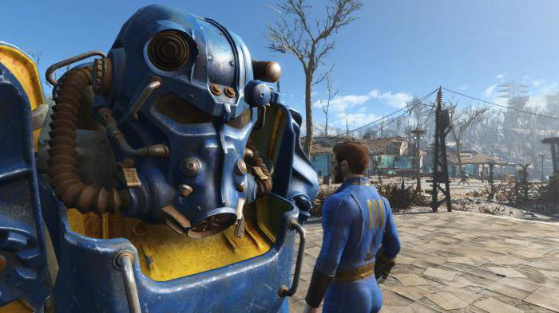
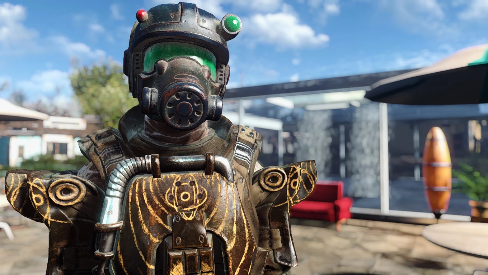

Armaduras
En el despiadado mundo post-apocalíptico de Fallout 4, la supervivencia depende tanto de la habilidad del jugador como de la calidad de su equipo. Entre las herramientas más importantes para la supervivencia se encuentran las armaduras, piezas de equipo diseñadas para proteger al jugador de los peligros del mundo, que van desde balas y explosiones hasta la radiación y los ataques de criaturas mutantes. Además de su funcionalidad práctica, las armaduras en Fallout 4 también ofrecen una oportunidad para que los jugadores expresen su estilo y personalidad, creando un aspecto único para su personaje. Las armaduras dentro del juego son mucho más que simples piezas de equipo son símbolos de protección, expresiones de estilo y herramientas esenciales para la supervivencia en un mundo despiadado, ya sea que estén enfrentando peligros en el mundo o simplemente mostrando su estilo único, los jugadores encontrarán que las armaduras desempeñan un papel crucial en su experiencia de juego con una amplia variedad de opciones de personalización y una funcionalidad práctica.
Una de las grandes características y novedades que destacaron en el juego es la personalización de nuestro personaje ya que los jugadores de esta manera se pueden adentrar más en el mundo con su toque único. Desde el primer momento en que inicias tu camino en Fallout 4, te encuentras frente a la tarea de crear tu protagonista a través de un sistema de creación de personajes robusto, los jugadores tienen el control completo sobre cada aspecto de la apariencia de su personaje, desde la forma de la cara hasta el peinado y las cicatrices. Tenemos una sección para cada detalle de la cara del personaje que nos da una gran lista de opciones según lo que seleccionemos además de que podemos “moldear” cada parte también a nuestro gusto por lo que cada jugador puede tener desde el personaje más complejo en personalización o simplemente el que viene predeterminado si es que no es de gran interés esta herramienta.
Una de las características más destacadas de Fallout 4 es la variedad de armaduras disponibles para los jugadores. Desde las clásicas armaduras de combate hasta las avanzadas armaduras asistidas por energía, el juego ofrece una amplia gama de opciones para adaptarse a diferentes estilos de juego y preferencias estéticas.
- Armaduras de Combate: las armaduras de combate son la base de la protección en el yermo. Están disponibles en diferentes niveles de resistencia y pueden ser mejoradas con modificaciones para aumentar su eficacia. Estas armaduras son ideales para enfrentamientos directos con enemigos humanos y criaturas.
- Armaduras asistidas por Energía: las armaduras asistidas por energía son la cúspide de la protección en Fallout 4. Proporcionan una protección excepcional contra el daño físico y la radiación, pero requieren núcleos de fusión para funcionar. Estas armaduras son escasas y altamente codiciadas, pero ofrecen una ventaja significativa en combate.
- Armaduras Ligeras y de Cuero: para aquellos que prefieren la agilidad sobre la resistencia bruta, las armaduras ligeras y de cuero ofrecen una protección decente sin sacrificar la movilidad. Son ideales para los jugadores que desean un enfoque más sigiloso en su juego.
- Armaduras de Facción: además de las armaduras estándar, Fallout 4 presenta una variedad de armaduras únicas asociadas con diferentes facciones en el juego. Estas armaduras no solo ofrecen protección, sino que también reflejan la afiliación del jugador y pueden desbloquear opciones de diálogo especiales con ciertos personajes.
Cada pieza de armadura en Fallout 4 se clasifica en una de las siguientes categorías: Normal, Legendario o Único. Las armaduras normales no tienen bonificaciones especiales aplicadas a ellas. Por otro lado, las armaduras legendarias tienen bonificaciones aleatorias y suelen ser obtenidas como botín al derrotar a enemigos legendarios. Por último, las armaduras únicas tienen un nombre específico, vienen con una bonificación legendaria especial y solo están disponibles a través de ciertos comerciantes o como recompensas por completar misiones específicas.
Armadura de Raider
El tipo de armadura más común suele ser esta ya que es considerado generalmente como un armamento de nivel 1 y es más frecuentemente utilizada por los saqueadores. Ofrece la menor resistencia energética y balística entre todos los tipos de armadura.
Armadura de piel
Puede considerarse como una armadura de nivel 2. En términos estadísticos, es una mejora directa respecto a la armadura de saqueador en todos los aspectos, el cuero proporciona una resistencia energética superior pero una resistencia balística inferior en comparación con la armadura de metal. Sus variantes son estándar y resistente (cuero pesado).
Armadura metálica
Esta también se considera un tipo de armadura de nivel 2. El metal proporciona una resistencia balística superior pero una resistencia energética inferior en comparación con la armadura de cuero. Sus variantes son metal estándar y resistente (metal pesado).
Armadura de Combate
Puede considerarse como un tipo de armadura de nivel 3. La armadura de combate tiene una mejor resistencia balística que el cuero y una mejor resistencia energética que el metal, lo que la hace mejor equipada para un uso polivalente.
Armadura de synth
Puede considerarse como un tipo de armadura de nivel 4. El resultado final es una variante estándar que es sólo ligeramente más débil que la armadura de combate para uso general, una variante resistente que es algo mejor para uso general y una variante pesada que es mejor en todos los aspectos.
Una de las características más emocionantes de las armaduras en Fallout 4 es la capacidad de personalizar y mejorarlas. Los jugadores pueden instalar una variedad de modificaciones en sus armaduras, que van desde placas de armadura adicionales hasta sistemas de refrigeración mejorados. Estas mejoras no solo aumentan la resistencia y la eficacia de la armadura, sino que también permiten a los jugadores adaptar su equipo a su estilo de juego específico. Además de las mejoras físicas, los jugadores también pueden personalizar la apariencia de sus armaduras mediante la aplicación de pinturas y esquemas de colores únicos.
Las armaduras en Fallout 4 tienen un impacto significativo en la experiencia de juego del jugador. Además de proporcionar protección contra los peligros de este mundo radioactivo, también afectan la jugabilidad al influir en las estadísticas del personaje, como la resistencia, la velocidad de movimiento y la capacidad de carga. La elección de la armadura adecuada puede marcar la diferencia entre la vida y la muerte en un enfrentamiento con enemigos formidables.
Además, las armaduras también influyen en la forma en que los jugadores interactúan con el mundo del juego y con otros personajes. Por ejemplo, ciertas facciones pueden responder de manera diferente al jugador dependiendo de la armadura que esté usando, lo que puede desbloquear opciones de diálogo especiales o cambiar el resultado de ciertas misiones.